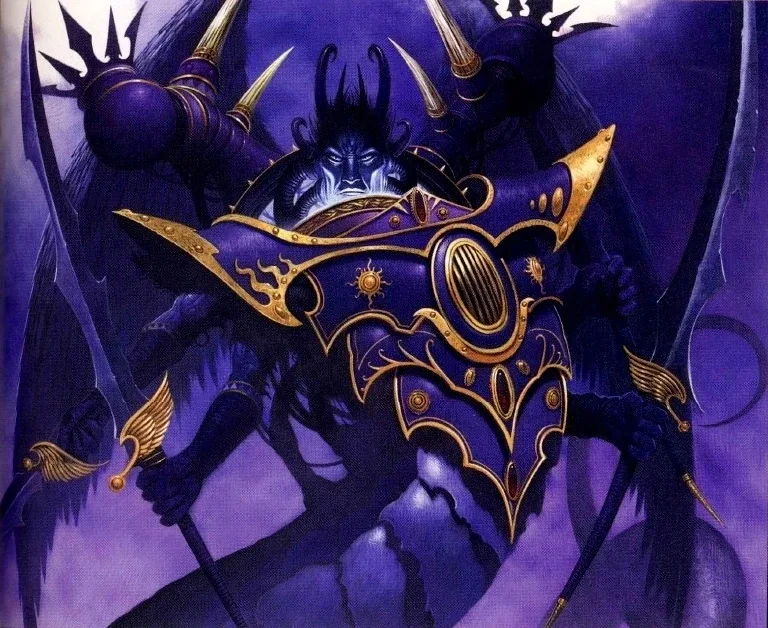

01ภาพรวม



02ต้นกำเนิด — ดาวโรงงาน Chemos
Fulgrim ตกลงบนดาวอุตสาหกรรม Chemos ที่ผู้คนทำงานหนักเกินกว่าจะมีเวลาสนใจศิลปะ เขาปฏิรูปดาวจนรุ่งเรือง นำความงามและวัฒนธรรมกลับมา — จุดเริ่มของความหลงใหลใน "ความสมบูรณ์แบบ"
03พบจักรพรรดิและ Legion ที่เล็กที่สุด
จักรพรรดิพบเขาในปี 830.M30 Legion ที่ 3 ถูกโรคระบาดจากการสร้าง Gene-seed ทำลายจนเหลือเพียงราว 200 นาย ต้องรบภายใต้การนำของ Horus ระยะหนึ่ง Fulgrim จึงผูกพันกับ Horus และเข้มงวดกับ Legion ให้ "สมบูรณ์แบบ" เพื่อชดเชยจำนวน
04Palatine Aquila และมิตรภาพกับ Ferrus
Emperor's Children ได้รับเกียรติใช้นกอินทรีของจักรพรรดิบนเกราะ Fulgrim สนิทกับ Ferrus Manus อย่างมาก ทั้งสองแลกอาวุธที่ตีให้กัน (Fireblade และ Forgebreaker)
05ดาบแห่ง Laer
บนดาว Laer Fulgrim หยิบดาบที่มีปีศาจของ Slaanesh สิงอยู่ ปีศาจค่อย ๆ ป้อนความหยิ่งและความหมกมุ่นให้เขา จนเขายอมรับข้อเสนอของ Horus
06Isstvan V — ฆ่าพี่น้องที่รักที่สุด
Fulgrim พยายามชักชวน Ferrus แต่ถูกปฏิเสธ ที่ Isstvan V ทั้งสองดวลกัน Fulgrim ตัดหัว Ferrus ความรู้สึกผิดทำให้จิตใจแตกสลาย ปีศาจยึดร่างของเขาชั่วคราว
07กลายเป็น Daemon Prince
Fulgrim หลอกพา Perturabo และ Iron Warriors ไปดาว Iydris เพื่อใช้พลังจากการสังหารหมู่ทำพิธีเลื่อนขั้นตัวเองเป็น Daemon Prince ร่างงูหลายแขนของ Slaanesh และต่อสู้ใน Siege of Terra
08หลัง Heresy จนถึงปัจจุบัน
ในปี 121.M31 เขาดวลกับ Guilliman ที่ Thessala แล้วกรีดคอด้วยใบมีดพิษจน Guilliman ต้องเข้า Stasis หมื่นปี ต่อมาหายเข้า Warp เมื่อ Guilliman ฟื้นคืน Fulgrim สิงร่างกงสุลของ Macragge มาเยาะเย้ย และในยุคปัจจุบันกลับมาบุกจักรวรรดิอีกครั้ง
09นิสัยและบุคลิก
- หลงใหลความงามและความสมบูรณ์แบบ
- มีเสน่ห์และใจกว้างในยุคแรก
- หยิ่งผยองจนถูกปีศาจใช้ประโยชน์
- แอบรู้สึกผิดเรื่อง Ferrus
10อาวุธและยุทโธปกรณ์
11ความสัมพันธ์กับจักรพรรดิ

จักรพรรดิแห่งมนุษยชาติ
บิดาผู้สร้างไม่มีบันทึก
ไม่มีบันทึก
Fulgrim คิดอย่างไรกับจักรพรรดิ
- พบกันครั้งแรกรักและนับถือบิดาอย่างมาก อยากเป็นบุตรที่สมบูรณ์แบบในสายตาพระองค์
- จุดเปลี่ยนปีศาจในดาบกระซิบว่าจักรพรรดิไม่เห็นคุณค่าของเขาเท่าที่ควร
- หลังทรยศหันหลังให้บิดาและมองว่าตัวเองเหนือกว่า
จักรพรรดิคิดอย่างไรกับ Fulgrim
- ภาพรวมจักรพรรดิภูมิใจใน Fulgrim และมอบเกียรติให้ Legion ใช้ Palatine Aquila — สัญลักษณ์ของความไว้วางใจที่ถูกทรยศในภายหลัง
12ความสัมพันธ์กับพี่น้อง Primarch ทุกคน
มุมมองของ Fulgrim ต่อพี่น้องแต่ละคน และมุมมองของพี่น้องต่อเขา — เรียงตามหมายเลข Legion กดชื่อเพื่อไปอ่านเรื่องของพี่น้องคนนั้น ดูภาพรวมทุกคู่ได้ที่ แผนผังความสัมพันธ์ของ Primarch

Lion El'Jonson
ตึงเครียดไม่มีบันทึกความรู้สึกที่ชัดเจน
มองว่าความหลงใหลความงามของ Fulgrim เป็นสิ่งไร้สาระที่บดบังเป้าหมายของสงคราม
- Great CrusadeLion ไม่มีเวลาให้กับ "ความหมกมุ่นในความงาม" ของ Fulgrim ตามบันทึก เขาเป็นหนึ่งในไม่กี่คนที่ดาบทัดเทียม Fulgrim ได้
- หลัง HeresyFulgrim อยู่ฝ่ายทรยศ ทั้งสองจึงเป็นศัตรู

Perturabo
ซับซ้อนใช้ Perturabo เป็นเครื่องมือเพื่อเลื่อนขั้นตัวเอง
เคยเป็นเพื่อน แต่ถูกหักหลัง
- Great CrusadeFulgrim เป็นหนึ่งในไม่กี่คนที่ Perturabo ยอมให้ใกล้ชิด
- Heresy — Angel ExterminatusFulgrim ชวน Perturabo ไปดาว Iydris บอกว่าจะพบสิ่ง "มหัศจรรย์" แล้วใช้ Iron Warriors เป็นเครื่องสังเวยในพิธีเลื่อนขั้นเป็น Daemon Prince — มิตรภาพพังทลาย

Jaghatai Khan
ไม่มีบันทึก- ภาพรวมไม่มีบันทึกเหตุการณ์สำคัญระหว่างทั้งสองโดยตรงในเนื้อเรื่องที่เผยแพร่ ทั้งคู่อยู่คนละฝ่ายในสงคราม Horus Heresy

Leman Russ
ไม่มีบันทึก- ภาพรวมไม่มีบันทึกเหตุการณ์สำคัญระหว่างทั้งสองโดยตรงในเนื้อเรื่องที่เผยแพร่ ทั้งคู่อยู่คนละฝ่ายในสงคราม Horus Heresy

Rogal Dorn
ศัตรูยั่วยุ Dorn ด้วยคำเยาะเย้ย
ไม่ตอบคำยั่วยุ และสู้กับ Fulgrim อย่างเยือกเย็น
- Great CrusadeFulgrim เคยถาม Dorn ว่าพระราชวังจะทนการบุกของ Iron Warriors ได้หรือไม่ — คำตอบนั้นทำให้ Perturabo โกรธมาก
- Siege of TerraFulgrim กำลังจะฆ่า Sigismund Dorn เข้ามาดวล แทงทะลุร่าง Fulgrim ได้ แต่ Fulgrim ในฐานะปีศาจหัวเราะและฟื้นตัว ก่อนจากไปเขาส่ง Phoenix Guard พยายามลอบสังหาร Dorn

Konrad Curze
เพื่อน / พันธมิตรใจดีกับ Curze ตั้งแต่แรกพบ และช่วยเขาเวลาเกิดอาการ
นับถือ Fulgrim อย่างเงียบ ๆ เพราะเป็นคนเดียวที่เขาไม่เห็นนิมิตความรุนแรง
- พบกันครั้งแรกFulgrim ใจดีกับ Curze และ Curze พบว่าไม่เห็นนิมิตความรุนแรงใด ๆ เมื่อมอง Fulgrim — สิ่งที่หายากมากจนเขารู้สึกผูกพัน
- Great Crusadeเมื่อ Curze มีอาการชัก Fulgrim รีบเข้าไปช่วย แต่ต่อมา Fulgrim นำเรื่องนิมิตของ Curze ไปปรึกษา Dorn ทำให้ Dorn เผชิญหน้ากับ Curze

Sanguinius
ไม่มีบันทึก- ภาพรวมไม่มีบันทึกเหตุการณ์สำคัญระหว่างทั้งสองโดยตรงในเนื้อเรื่องที่เผยแพร่ ทั้งคู่อยู่คนละฝ่ายในสงคราม Horus Heresy

Ferrus Manus
สนิทมากรัก Ferrus มากที่สุดในหมู่พี่น้อง — แล้วฆ่าเขา
เพื่อนที่ดีที่สุด จนวันที่ถูกชวนให้ทรยศ
- พบกันครั้งแรก — Mount Narodnyaทั้งสองพบกันที่โรงตีเหล็กใต้ภูเขา Narodnya บน Terra และแข่งตีอาวุธ Fulgrim ตีค้อน Forgebreaker ให้ Ferrus ส่วน Ferrus ตีดาบ Fireblade ให้ Fulgrim กลายเป็นเพื่อนสนิทที่ทั้งจักรวรรดิรู้จัก "The Phoenician และ The Gorgon"
- ก่อน Isstvan VFulgrim ไปชวน Ferrus ให้ร่วมทรยศบนยาน Fist of Iron Ferrus โกรธจนทั้งสองต่อสู้กัน
- Isstvan VFerrus บุกไล่ล่า Fulgrim ด้วยตัวเอง Fulgrim ตัดหัวเขาด้วยดาบปีศาจ ความรู้สึกผิดทำลายจิตใจของ Fulgrim
- หมื่นปีต่อมาแหล่งข้อมูลระบุว่า Fulgrim ยังแอบสำนึกผิดเรื่อง Ferrus โดยไม่มีใครรู้

Angron
ตึงเครียดยั่วโมโห Angron เพื่อความสนุก
ไม่มีบันทึกความรู้สึก
- Siege of Terraช่วงแรกของการปิดล้อม Fulgrim ไม่ทำอะไรนอกจากยั่วยุ Angron ให้คลั่งเพื่อความบันเทิงของตัวเอง

Roboute Guilliman
ศัตรูเยาะเย้ยและพยายามฆ่า Guilliman
ศัตรูที่เกือบฆ่าเขาได้
- Great Scouring — Thessala (121.M31)Fulgrim ดวลกับ Guilliman บนยาน Pride of the Emperor และกรีดคอด้วยใบมีดพิษตรงแผลเป็นที่ Kor Phaeron เคยทิ้งไว้ที่ Calth — Guilliman ต้องเข้า Stasis หมื่นปี
- 999.M41เมื่อ Guilliman ฟื้นคืน Fulgrim รับรู้ผ่าน Warp และสิงร่างกงสุลของ Macragge มาเยาะเย้ยในการปรากฏตัวครั้งแรก

Mortarion
ตึงเครียดไม่มีบันทึก
ไม่เข้าใจว่าทำไม Fulgrim ยอมยุ่งกับปีศาจ
- HeresyMortarion ผู้เกลียดเวทมนตร์ตั้งคำถามว่าทำไม Lorgar และ Fulgrim ยอมเกลือกกลั้วกับสิ่งมีชีวิตใน Warp

Magnus the Red
ไม่มีบันทึก- ภาพรวมไม่มีบันทึกเหตุการณ์สำคัญระหว่างทั้งสองโดยตรงในเนื้อเรื่องที่เผยแพร่ ทั้งคู่อยู่ฝ่ายทรยศ

Horus Lupercal
เพื่อน / พันธมิตรภักดีต่อ Horus และเป็นคนแรก ๆ ที่เข้าร่วม
ไว้ใจ Fulgrim และส่งไปชวน Ferrus
- Great CrusadeEmperor's Children เคยรบภายใต้ Horus ช่วงที่ Legion ยังเล็ก Fulgrim จึงผูกพันกับ Horus
- UllanorFulgrim สนับสนุนการแต่งตั้ง Horus เป็น Warmaster ตั้งแต่แรก
- HeresyHorus ส่ง Fulgrim ไปชวน Ferrus แต่ล้มเหลว Horus โกรธมาก

Lorgar Aurelian
ซับซ้อนไม่มีบันทึกความรู้สึก
จ้องมอง "Fulgrim" แล้วรู้ว่าไม่ใช่ตัวจริง
- Heresy — สภาผู้ทรยศในการประชุมของ Primarch ผู้ทรยศ Lorgar จ้อง Fulgrim ไม่วางตา แล้วใช้กระบองฟาดและประกาศว่า "นี่ไม่ใช่ Fulgrim" — ร่างนั้นถูกปีศาจในดาบสิงอยู่

Vulkan
ศัตรูศัตรูที่ Isstvan V
ศัตรูที่ Isstvan V
- Isstvan VVulkan และ Corax เตือน Ferrus ไม่ให้บุกตาม Fulgrim แต่ไม่สำเร็จ Salamanders ถูกฝ่ายทรยศระลอกสองสังหาร

Corvus Corax
ศัตรูหัวเราะเยาะขณะที่พันธมิตรปลอมยิงใส่ Raven Guard
ศัตรูที่ Isstvan V
- Isstvan VFulgrim หัวเราะเมื่อ Legion ระลอกสองหันปืนยิงใส่ Raven Guard และ Salamanders

Alpharius Omegon
ไม่มีบันทึก- ภาพรวมไม่มีบันทึกเหตุการณ์สำคัญระหว่างทั้งสองโดยตรงในเนื้อเรื่องที่เผยแพร่ ทั้งคู่อยู่ฝ่ายทรยศ
?Primarch ที่ II และ XI (ถูกลบ)
ไม่มีบันทึก- ภาพรวมทุกบันทึกของ Primarch ที่ 2 และ 11 ถูกลบ พี่น้องที่เหลือถูกห้ามพูดถึง ความสัมพันธ์ใด ๆ จึงไม่ปรากฏในประวัติศาสตร์